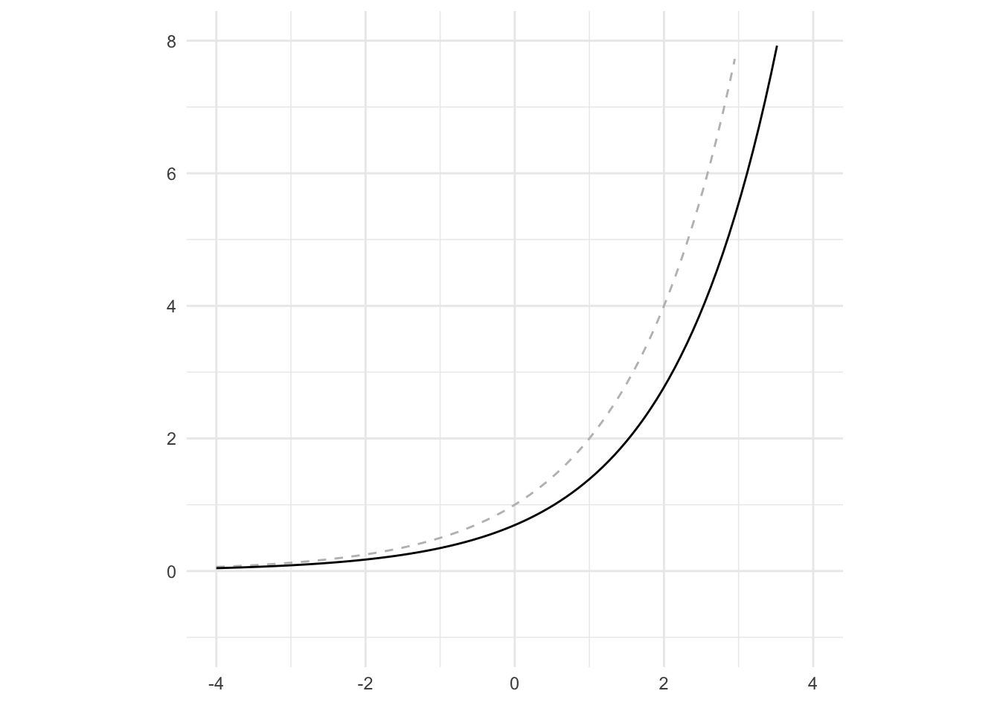

library(tidyverse)内容
準備
まず，パッケージを読み込む．
第4章
第1節
リスト 4-1-(1)
# Python
import numpy as np# R
NULLNumpyのインポートに対応するRのコードはない．{tidyverse}をインストールすれば良い．
リスト 4-1-(2)
# Python
a = np.array([2, 1])
print(a)# R
a <- array(c(2, 1), dim = c(1, 2))
print(a) [,1] [,2]
[1,] 2 1np.array()に対応するRのコードにはarray()がある．array(要素, dim = c(行数, 列数))のように指定すると配列が作成される．ちなみに，array()では要素が列に沿って配置されるため，行に沿って配置したい場合はmatrix()でbyrow引数を利用しなければならない．
array(1:4, dim = c(2, 2)) [,1] [,2]
[1,] 1 3
[2,] 2 4matrix(1:4, ncol = 2, byrow = TRUE) |>
as.array() [,1] [,2]
[1,] 1 2
[2,] 3 4リスト 4-1-(3)
# Python
type(a)# R
class(a)[1] "matrix" "array" データ型を確認するにはclass()を用いたら良い．
リスト 4-1-(4)
# Python
c = np.array([[1, 2], [3, 4]])
print(c)# R
c <- matrix(c(1, 2, 3, 4), nrow = 2, ncol = 2, byrow = TRUE) |>
as.array()
print(c) [,1] [,2]
[1,] 1 2
[2,] 3 4リスト 4-1-(5)
# Python
d = np.array([[1], [2]])
print(d)# R
d <- array(c(1, 2), dim = c(2, 1))
print(d) [,1]
[1,] 1
[2,] 2リスト 4-1-(6)
# Python
print(d.T)
print(d.T.T)# R
print(t(d)) [,1] [,2]
[1,] 1 2print(t(t(d))) [,1]
[1,] 1
[2,] 2転置にはt()を用いる．
リスト 4-1-(7)
# Python
a = np.array([2, 1])
b = np.array([1, 3])
print(a + b)# R
a <- array(c(2, 1), dim = c(1, 2))
b <- array(c(1, 3), dim = c(1, 2))
print(a + b) [,1] [,2]
[1,] 3 4リスト 4-1-(8)
# Python
a = np.array([2, 1])
b = np.array([1, 3])
print(a + b)# R
a <- array(c(2, 1), dim = c(1, 2))
b <- array(c(1, 3), dim = c(1, 2))
print(a - b) [,1] [,2]
[1,] 1 -2リスト 4-1-(9)
# Python
## print(2 * a)print(2 * a) [,1] [,2]
[1,] 4 2リスト 4-1-(10)
# Python
b = np.array([1, 3])
c = np.array([4, 2])
print(b @ c)# R
b <- array(c(1, 3), dim = c(1, 2))
c <- array(c(4, 2), dim = c(2, 1))
print(b %*% c) [,1]
[1,] 10行列の積は%*%を用いる．
行列計算\(\mathbb{b} \cdot \mathbb{c}\)では，行列\(\mathbb{b}\)の列数と行列\(\mathbb{c}\)の行数が一致する必要がある．Pythonでは，g行列の行数(または列数)を指定していなくとも計算が可能であるが，Rではそうはいかない．そのため行列b, cの行数(または列数)を計算可能な数値に指定しなければならない．
リスト 4-1-(11)
# Python
a = np.array([1, 3])
print(np.linalg.norm(a))# R
a <- array(c(1, 3), dim = c(1, 2))
print(norm(a, '2'))[1] 3.162278ノルムはnorm()で計算可能である．
第2節
リセット
# Python
%reset# R
rm(list = ls(all.names = TRUE))環境のリセットはrm(list = ls())でできる．今回はすべてをリセットするためにall.names引数にTRUEを指定している．
リスト 4-2-(1)
# Python
a = np.ones(1000) # [1 1 1 ... 1]
b = np.arange(1, 1001) # [1 2 3 ... 1000]
print(a @ b)# R
a <- array(rep(1, times = 1000), dim = c(1, 1000))
b <- array(seq(1:1000), dim = c(1000, 1))
print(a %*% b) [,1]
[1,] 500500第3節
リスト 4-3-(1)
関数を定義 ———-
# Python
def f(w0, w1): # (A) fの定義
return w0 ** 2 + 2 * w0 * w1 + 3 # 式4-41
def df_dw0(w0, w1): # (B) fのw0に関する偏微分
return 2 * w0 + 2 * w1 # 式4-44
def df_dw1(w0, w1): # (C) fのw1に関する偏微分
return 2 * w0 # 式4-46# R
f <- function(w0, w1) { # (A) fの定義
return(w0 ^ 2 + 2 * w0 * w1 + 3) # 式4-41
}
df_dw0 <- function(w0, w1) { # (B) fのw0に関する偏微分
return(2 * w0 + 2 * w1) # 式4-44
}
df_dw1 <- function(w0, w1) { # (C) fのw1に関する偏微分
return(2 * w0) # 式4-46
}関数を定義するにはfunction(){}を用いる．return()で値を返すことができる．
表示データの計算 ———-
# Python
w0_min, w0_max = -2, 2
w1_min, w1_max = -2, 2
w0_n, w1_n = 17, 17
w0 = np.linspace(w0_min, w0_max, w0_n)
w1 = np.linspace(w1_min, w1_max, w1_n)
ww0, ww1 = np.meshgrid(w0, w1) # (D) グリッド座標の作成
f_num = f(ww0, ww1) # (E) fの値の計算
df_dw0_num = df_dw0(ww0, ww1) # fの偏微分の計算
df_dw1_num = df_dw1(ww0, ww1) # fの偏微分の計算# R
w0_min <- -2; w0_max <- 2
w1_min <- -2; w1_max <- 2
w0_n <- 17; w1_n <- 17
w0 <- seq(from = w0_min, to = w0_max, length.out = w0_n)
w1 <- seq(from = w1_min, to = w1_max, length.out = w1_n)
grid_w0w1 <- expand.grid(w0, w1)
ww0 <- grid_w0w1$Var1 |>
array(dim = c(w0_n, w1_n))
ww1 <- grid_w0w1$Var2 |>
array(dim = c(w0_n, w1_n))
f_num <- f(ww0, ww1)
df_dw0_num <- df_dw0(ww0, ww1)
df_dw1_num <- df_dw1(ww0, ww1)Rで，複数のコードを1行に書くには;で区切れば良い．Pythonのnp.linspace()に対応するRのコードはseq()で，from引数, to引数で指定された値の範囲から，length.out引数で指定された個数の値をベクトルとして出力する関数である．上のコードでは，-2から2までの値の中から17個の値を出力している．
np.meshgrid(w0, w1)は，2次元平面でのすべての座標を表している．例えば，ww0[1, 1], ww1[1, 1]は\((\mathrm{w}_0, \mathrm{w}_1) = (-2, -2)\)を，ww0[1, 2], ww1[1, 2]は\((\mathrm{w}_0, \mathrm{w}_1) = (-2, -1.75)\)を表している．ww0とww1の対応する要素が各座標を表しているのである．
ww0[1:4, 1:4] [,1] [,2] [,3] [,4]
[1,] -2.00 -2.00 -2.00 -2.00
[2,] -1.75 -1.75 -1.75 -1.75
[3,] -1.50 -1.50 -1.50 -1.50
[4,] -1.25 -1.25 -1.25 -1.25ww1[1:4, 1:4] [,1] [,2] [,3] [,4]
[1,] -2 -1.75 -1.5 -1.25
[2,] -2 -1.75 -1.5 -1.25
[3,] -2 -1.75 -1.5 -1.25
[4,] -2 -1.75 -1.5 -1.25Rで同じように格子状の座標を生成するにはexpand.grid()がある．与えられたベクトルのすべての組み合わせを生成し，それらを格納したデータフレームを返してくれる．
x <- c(1, 2, 3)
y <- c(4, 5, 6)
expand.grid(x, y) Var1 Var2
1 1 4
2 2 4
3 3 4
4 1 5
5 2 5
6 3 5
7 1 6
8 2 6
9 3 6グラフ描画 ———-
# Python
plt.figure(figsize=(9, 4))
plt.subplots_adjust(wspace=0.3)# R
NULL- 等高線表示
# Python
plt.subplot(1, 2, 1)
cont = plt.contour( # (F) fの等高線表示
ww0, ww1, f_num, levels=10, colors="black")
cont.clabel(fmt="%d", fontsize=8)
plt.xticks(range(w0_min, w0_max + 1, 1))
plt.yticks(range(w1_min, w1_max + 1, 1))
plt.xlim(w0_min - 0.5, w0_max + 0.5)
plt.ylim(w1_min - 0.5, w1_max + 0.5)
plt.xlabel("$w_0$", fontsize=14)
plt.ylabel("$w_1$", fontsize=14)# R
df <- array(NA, dim = c(w0_n * w1_n, 5)) |> # 空のデータフレームを用意．
data.frame() |>
rename(ww0 = 'X1', # 変数名を変更．
ww1 = 'X2',
f_num = 'X3',
dw0 = 'X4',
dw1 = 'X5')
n <- 1 # 便宜上のインデックス．
for (i in 1:w0_n) {
for (j in 1:w1_n) {
df[n, 1] <- ww0[i, j] # ww0を順番に代入．
df[n, 2] <- ww1[i, j] # ww1を順番に代入．
df[n, 3] <- f_num[i, j] # ww0, ww1に対応するfを代入．
df[n, 4] <- df_dw0_num[i, j] # ww0, ww1に対応するdw0を代入．
df[n, 5] <- df_dw1_num[i, j] # ww0, ww1に対応するdw1を代入．
n <- n + 1
}
}
df |>
ggplot(aes(ww0, ww1, z = f_num)) +
geom_contour() +
coord_fixed(ratio = 1) +
labs(x = expression(w[0]), y = expression(w[1])) +
theme_minimal()
等高線表示にはggplot2::geom_contour()を用いる．引数にはx軸, y軸とそれらに対応するz軸の値が必要である．{ggplot2}を用いてのグラフ描画には，整然(tidy)なデータフレームが必要である(整然データについては宋・矢内『私たちのR』第17章を参照されたい)．そのため，少し強引に作成しなければならない．
- ベクトル表示
# Python
plt.subplot(1, 2, 2)
plt.quiver( # (G) fの勾配のベクトル表示
ww0, ww1, df_dw0_num, df_dw1_num)
plt.xlabel("$w_0$", fontsize=14)
plt.ylabel("$w_1$", fontsize=14)
plt.xticks(range(w0_min, w0_max + 1, 1))
plt.yticks(range(w1_min, w1_max + 1, 1))
plt.xlim(w0_min - 0.5, w0_max + 0.5)
plt.ylim(w1_min - 0.5, w1_max + 0.5)
plt.show()# R
df |>
ggplot() +
geom_segment(aes(x = ww0, xend = ww0 + dw0 / 30,
y = ww1, yend = ww1 + dw1 / 30),
linewidth = 0.3,
arrow = arrow(length = unit(0.1, 'cm'))) +
coord_fixed(ratio = 1) +
labs(x = expression(w[0]), y = expression(w[1])) +
theme_minimal()ベクトル表示にはggplot2::geom_segment()を用いる．引数にx軸, y軸の始まりであるx, yと，終わりであるxend, yendを指定する．そうすると始まりと終わりを繋ぐベクトルが表示される．xend, yendには，\((\mathrm{w}_0, \mathrm{w}_1)\)からそれぞれ軸に対して偏微分した値を足した数値を指定している．
第4節
リセット
# Python
%reset# R
rm(list = ls(all.names = TRUE))リスト 4-4-(1)
## import numpy as np# $
NULLリスト 4-4-(2)
# Python
A = np.array([[1, 2, 3], [4, 5, 6]])
print(A)# R
A <- matrix(1:6, nrow = 2, ncol = 3, byrow = TRUE) |>
as.array()
print(A) [,1] [,2] [,3]
[1,] 1 2 3
[2,] 4 5 6リスト 4-4-(3)
# Python
B = np.array([[7, 8, 9], [10, 11, 12]])
print(B)# R
B <- matrix(7:12, nrow = 2, ncol = 3, byrow = TRUE) |>
as.array()
print(B) [,1] [,2] [,3]
[1,] 7 8 9
[2,] 10 11 12リスト 4-4-(4)
# Python
print(A + B)
print(A - B)# R
print(A + B) [,1] [,2] [,3]
[1,] 8 10 12
[2,] 14 16 18print(A - B) [,1] [,2] [,3]
[1,] -6 -6 -6
[2,] -6 -6 -6リスト 4-4-(5)
# Python
A = np.array([[1, 2, 3], [4, 5, 6]])
print(2 * A)# R
A <- matrix(1:6, nrow = 2, ncol = 3, byrow = TRUE) |>
as.array()
print(2 * A) [,1] [,2] [,3]
[1,] 2 4 6
[2,] 8 10 12リスト 4-4-(6)
# Python
A = np.array([1, 2, 3])
B = np.array([4, 5, 6])
print(A @ B)# R
A <- array(1:3, dim = c(1, 3))
B <- array(4:6, dim = c(3, 1))
print(A %*% B) [,1]
[1,] 32行列計算の都合上，\(\mathbb{A}\)は\(1 \times 3\)行列，\(\mathbb{B}\)は\(3 \times 1\)行列としている．行列の内積は%*%で計算可能である．
リスト 4-4-(7)
# Python
A = np.array([1, 2, 3])
B = np.array([4, 5, 6])
print(A * B)# R
A <- array(1:3, dim = c(1, 3))
B <- array(4:6, dim = c(1, 3))
print(A * B) [,1] [,2] [,3]
[1,] 4 10 18各要素同士の積は*で計算できる．この場合，それぞれの行列の行数と列数は一致しなければならないことに注意する．
リスト 4-4-(8)
# Python
A = np.array([1, 2, 3])
B = np.array([4, 5, 6])
print(A / B)# R
A <- array(1:3, dim = c(1, 3))
B <- array(4:6, dim = c(1, 3))
print(A / B) [,1] [,2] [,3]
[1,] 0.25 0.4 0.5リスト 4-4-(9)
# Python
A = np.array([[1, 2, 3], [-1, -2, -3]])
B = np.array([[4, -4], [5, -5], [6, -6]])
print(A @ B)# R
A <- matrix(c(1:3, -1:-3), nrow = 2, ncol = 3, byrow = TRUE) |>
as.array()
B <- array(c(4:6, -4:-6), dim = c(3, 2))
print(A %*% B) [,1] [,2]
[1,] 32 -32
[2,] -32 32リスト 4-4-(10)
# Python
print(np.identity(3))# R
print(diag(1, nrow = 3, ncol = 3)) [,1] [,2] [,3]
[1,] 1 0 0
[2,] 0 1 0
[3,] 0 0 1単位行列はdiag()で作成できる．
リスト 4-4-(11)
# Python
A = np.array([[1, 2, 3], [4, 5, 6], [7, 8, 9]])
I = np.identity(3)
print(A @ I)# R
A <- matrix(1:9, nrow = 3, ncol = 3, byrow = TRUE) |>
as.array()
I <- diag(1, nrow = 3, ncol = 3)
print(A %*% I) [,1] [,2] [,3]
[1,] 1 2 3
[2,] 4 5 6
[3,] 7 8 9リスト 4-4-(12)
# Python
A = np.array([[1, 2], [3, 4]])
invA = np.linalg.inv(A)
print(invA)# R
A <- matrix(1:4, nrow = 2, ncol = 2, byrow = TRUE) |>
as.array()
invA <- solve(A)
print(invA) [,1] [,2]
[1,] -2.0 1.0
[2,] 1.5 -0.5逆行列はsolve()を用いる．
リスト 4-4-(13)
# Python
A = np.array([[1, 2, 3], [4, 5, 6]])
print(A)
print(A.T)# R
A <- matrix(1:6, nrow = 2, ncol = 3, byrow = TRUE) |>
as.array()
print(A) [,1] [,2] [,3]
[1,] 1 2 3
[2,] 4 5 6print(t(A)) [,1] [,2]
[1,] 1 4
[2,] 2 5
[3,] 3 6転置にはt()を用いる．
第5節
リセット
# Python
%reset# R
rm(list = ls(all.names = TRUE))リスト 4-5-(1)
# Python
%matplotlib inline
import numpy as np
import matplotlib.pyplot as plt# R
NULL表示データの計算 ———-
# Python
x = np.linspace(-4, 4, 100)
y = 2 ** x
y2 = 3 ** x
y3 = 0.5 ** x# R
x <- seq(from = -4, to = 4, length.out = 100)
y <- 2 ^ x
y2 <- 3 ^ x
y3 <- 0.5 ^ xグラフ描画 ———-
# Python
plt.figure(figsize=(5, 5))
plt.plot(x, y, "black", linewidth=3, label="$y=2^x$")
plt.plot(x, y2, "cornflowerblue", linewidth=3, label="$y=3^x$")
plt.plot(x, y3, "gray", linewidth=3, label="$y=0.5^x$")
plt.legend(loc="lower right")
plt.xlim(-4, 4)
plt.ylim(-2, 6)
plt.grid()
plt.show()# R
tibble(x_plt = c(x, x, x),
y_plt = c(y, y2, y3),
col = rep(c('1', '2', '3'), each = length(x))) |>
ggplot(aes(x = x_plt, y = y_plt, color = col)) +
geom_line() +
xlim(-4, 4) + ylim(-2, 6) +
coord_fixed(ratio = 8 / 8) +
scale_color_manual(values = c('black', 'cornflowerblue', 'gray'),
name = element_blank(),
labels = c(expression(y == 2 ^ x),
expression(y == 3 ^ x),
expression(y == 0.5 ^ x))) +
labs(x = element_blank(), y = element_blank()) +
theme_minimal()リスト 4-5-(2)
表示データの計算 ———-
# Python
x = np.linspace(-8, 8, 100)
y = 2 ** x
# np.log(0) はエラーになるので 0 は含めない
x2 = np.linspace(0.001, 8, 100)
# 底を 2 とした log を公式 (7) で計算
y2 = np.log(x2) / np.log(2)# R
x <- seq(from = -8, to = 8, length.out = 100)
y <- 2 ^ x
x2 <- seq(from = 0.001, to = 8, length.out = 100)
y2 <- log(x2) / log(2)グラフ描画 ———-
# Python
plt.figure(figsize=(5, 5))
plt.plot(x, y, "black", linewidth=3)
plt.plot(x2, y2, "cornflowerblue", linewidth=3)
plt.plot(x, x, "black", linestyle="--", linewidth=1)
plt.xlim(-8, 8)
plt.ylim(-8, 8)
plt.grid()
plt.show()# R
ggplot() +
geom_line(data = tibble(x_plt = x, y_plt = y), # 指数関数
mapping = aes(x = x_plt, y = y_plt),
color = 'black') +
geom_line(data = tibble(x_plt = x2, y_plt = y2), # 対数関数
mapping = aes(x = x_plt, y = y_plt),
color = 'cornflowerblue') +
geom_line(data = tibble(x_plt = x, y_plt = x), # y = x
mapping = aes(x = x_plt, y = y_plt),
linetype = 'dashed') +
xlim(-8, 8) + ylim(-8, 8) +
coord_fixed(ratio = 1) +
labs(x = element_blank(), y = element_blank()) +
theme_minimal()リスト 4-5-(3)
表示データの計算 ———-
# Python
x = np.linspace(-4, 4, 100)
y = (x - 1) ** 2 + 2
logy = np.log(y)# R
x <- seq(from = -4, to = 4, length.out = 100)
y <- (x - 1) ^ 2 + 2
logy <- log(y)グラフ描画 ———-
# Python
plt.figure(figsize=(4, 4))
plt.plot(x, y, "black", linewidth=3)
plt.plot(x, logy, "cornflowerblue", linewidth=3)
plt.xticks(range(-4, 5, 1))
plt.yticks(range(-4, 9, 1))
plt.xlim(-4, 4)
plt.ylim(-4, 8)
plt.grid()
plt.show()# R
ggplot() +
geom_line(data = tibble(x_plt = x, y_plt = y), # 指数関数
mapping = aes(x = x_plt, y = y_plt),
color = 'black') +
geom_line(data = tibble(x_plt = x, y_plt = logy), # 対数化
mapping = aes(x = x_plt, y = y_plt),
color = 'cornflowerblue') +
xlim(-4, 4) + ylim(-4, 8) +
coord_fixed(ratio = 8 / 12) +
labs(x = element_blank(), y = element_blank()) +
theme_minimal()
リスト 4-5-(4)
表示データの計算 ———-
# Python
x = np.linspace(-4, 4, 100)
a = 2
y = a ** x
dy = np.log(a) * y# R
x <- seq(from = -4, to = 4, length.out = 100)
a <- 2
y <- a ^ x
dy <- log(a) * yグラフ描画 ———-
# Python
plt.figure(figsize=(4, 4))
plt.plot(x, y, "gray", linestyle="--", linewidth=3)
plt.plot(x, dy, "black", linewidth=3)
plt.xlim(-4, 4)
plt.ylim(-1, 8)
plt.grid()
plt.show()# R
ggplot() +
geom_line(data = tibble(x_plt = x, y_plt = y), # y
mapping = aes(x = x_plt, y = y_plt),
color = 'gray',
linetype = 'dashed') +
geom_line(data = tibble(x_plt = x, y_plt = dy), # y'
mapping = aes(x = x_plt, y = y_plt)) +
xlim(-4, 4) + ylim(-1, 8) +
coord_fixed(ratio = 8 / 9) +
labs(x = element_blank(), y = element_blank()) +
theme_minimal()
リスト 4-5-(5)
表示データの計算 ———-
# Python
x = np.linspace(0.0001, 4, 100) # 0 以下では定義できない
y = np.log(x)
dy = 1 / x# R
x <- seq(from = 0.0001, to = 4, length.out = 100)
y <- log(x)
dy <- 1 / xグラフ描画 ———-
# Python
plt.figure(figsize=(4, 4))
plt.plot(x, y, "gray", linestyle="--", linewidth=3)
plt.plot(x, dy, "black", linewidth=3)
plt.xlim(-1, 4)
plt.ylim(-8, 8)
plt.grid()
plt.show()# R
ggplot() +
geom_line(data = tibble(x_plt = x, y_plt = y), # y
mapping = aes(x = x_plt, y = y_plt),
color = 'gray',
linetype = 'dashed') +
geom_line(data = tibble(x_plt = x, y_plt = dy), # y'
mapping = aes(x = x_plt, y = y_plt)) +
xlim(-1, 4) + ylim(-8, 8) +
coord_fixed(ratio = 5 / 16) +
labs(x = element_blank(), y = element_blank()) +
theme_minimal()リスト 4-5-(6)
表示データの計算 ———-
# Python
x = np.linspace(-10, 10, 100)
y = 1 / (1 + np.exp(-x)) # 式4-114# R
x <- seq(from = -10, to = 10, length.out = 100)
y <- 1 / (1 + exp(-x))グラフ描画 ———-
# Python
plt.figure(figsize=(4, 4))
plt.plot(x, y, "black", linewidth=3)
plt.xlim(-10, 10)
plt.ylim(-1, 2)
plt.grid()
plt.show()# R
ggplot() +
geom_line(data = tibble(x_plt = x, y_plt = y),
mapping = aes(x = x_plt, y = y_plt)) +
xlim(-10, 10) + ylim(-1, 2) +
coord_fixed(ratio = 20 / 3) +
labs(x = element_blank(), y = element_blank()) +
theme_minimal()リスト 4-5-(7)
ソフトマックス関数 ———-
# Python
def softmax(x0, x1, x2):
u = np.exp(x0) + np.exp(x1) + np.exp(x2) # 式4-119
y0 = np.exp(x0) / u # 式4-120
y1 = np.exp(x1) / u
y2 = np.exp(x2) / u
return y0, y1, y2# R
softmax <- function(x0, x1, x2) {
u <- exp(x0) + exp(x1) + exp(x2)
y0 <- exp(x0) / u
y1 <- exp(x1) / u
y2 <- exp(x2) / u
return(c(y0, y1, y2))
}テスト ———-
# Python
y = softmax(2, 1, -1)
print(np.round(y, 4)) # 小数点以下4桁の概数を表示
print(np.sum(y)) # 和を表示# R
y <- softmax(2, 1, -1)
print(round(y, 4))[1] 0.7054 0.2595 0.0351print(sum(y))[1] 1リスト 4-5-(8)
表示データの計算 ———-
# Python
x0_n, x1_n = 20, 20 # サーフェス表示の解像度
x0 = np.linspace(-4, 4, x0_n)
x1 = np.linspace(-4, 4, x1_n)
xx0, xx1 = np.meshgrid(x0, x1) # グリッド座標の作成
y = softmax(xx0, xx1, 1) # ソフトマックス関数の値を計算# R
x0_n <- 20; x1_n <- 20
x0 <- seq(from = -4, to = 4, length.out = x0_n)
x1 <- seq(from = -4, to = 4, length.out = x1_n)
grid_x0x1 <- expand.grid(x0, x1)
xx0 <- grid_x0x1$Var1 |>
array(dim = c(x0_n, x1_n))
xx1 <- grid_x0x1$Var2 |>
array(dim = c(x0_n, x1_n))
y_vec <- softmax(xx0, xx1, 1)
y <- array(y_vec, dim = c(x0_n * x1_n, 3))Pythonでは，yは行数x0_n, 列数x1_nの行列となるが，Rではそうはならない．各値の計算結果がベクトルとなって出力されてしまう．
head(y_vec, 5)[1] 0.006648354 0.010094061 0.015298104 0.023122447 0.034807159このベクトルは，(y0[1], y0[2], y0[3], ..., y0[400], y1[1], y1[2], ...)のような並びとなっているので，\(400 \times 3\)の行列に変換しなければならない．1列目に400個のy0，2列目に400個のy1，3列目に400個のy2のような行列としている．
グラフ描画 ———-
# Python
plt.figure(figsize=(8, 3))
for i in range(2):
ax = plt.subplot(1, 2, i + 1, projection="3d")
ax.plot_surface(
xx0, xx1, y[i],
rstride=1, cstride=1, alpha=0.3,
color="blue", edgecolor="black",
)
ax.set_xlabel("$x_0$", fontsize=14)
ax.set_ylabel("$x_1$", fontsize=14)
ax.view_init(40, -125)
plt.show()# R
persp(x = x0, y = x1,
z = y[,1] |>
matrix(nrow = x0_n, ncol = x1_n, byrow = TRUE),
zlab = '',
theta = -40, phi = 30)
persp(x = x0, y = x1,
z = y[,2] |>
matrix(nrow = x0_n, ncol = x1_n, byrow = TRUE),
zlab = '',
theta = -40, phi = 30)
3Dプロットにはpersp()関数を用いた．x, y引数にはx0, x1を，z引数には2つの値に対応した行列を指定しなければ描画されない点に注意．